包含壳的脱壳
有的时候我们丢失的数据过多，如果我们要找到我们所有丢失的数据基本上是不是太可能的，这个时候我们将壳的一部分包含在程序当中，当不需要做太大的动作的时候，我们的这种做法还是可以的，具体操作如下：
AsProtect找丢失的数据区段
首先我们先找到我们假的OEP，这个壳子我们还是用最后一次异常法：我们先隐藏OD，其实可以用OD插件的options设置开启自动隐藏（小技巧），这个时候我们设置我们的异常为：
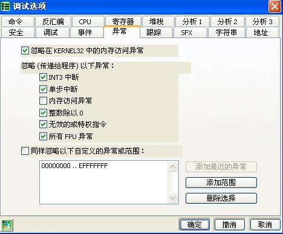
然后我们用最后一次异常法（shift+F9），这里一共是27次，在26次的时候我们我们调节我们的异常这个地方我不知道其他人为啥可以，但我就是不可以，我们这个时候将我们的异常调节为：
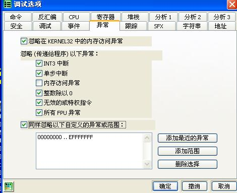
然后我们在最近的一个retn下端，然后执行过去：
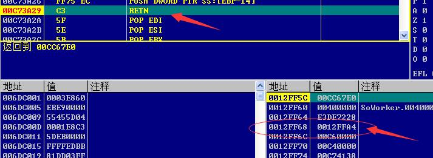
这个时候注意看我在堆栈处的箭头，在这个地方下硬件下硬件写入断点（具体原因只有当时研究的人知道），然后我们的程序会跑到一个jmp处，我们删除硬件写入断点，然后往下跟句，然后我们当前的位置：
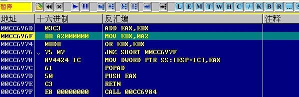
塑这个位置使我们比较合适的找数据的位置：
1 | 00CC696F BB A2000000 MOV EBX,0A2 |
然后我们用我们的LoadPE进行脱壳：
在这里我们先纠正镜像大小，然后完全转存。
下面比较重要，注意看我们需要区域转存：
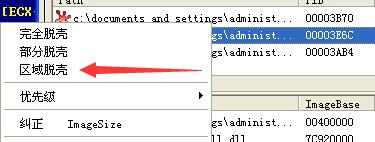
注意我们选择的区段要包含我们刚才停留的位置：这个时候我们使用LoadPE给我们的PE编辑器，打开文件，点击编辑区段：
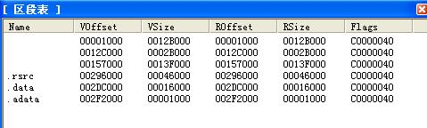
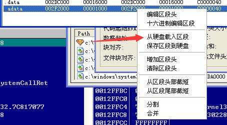
导入我们刚才的区段。
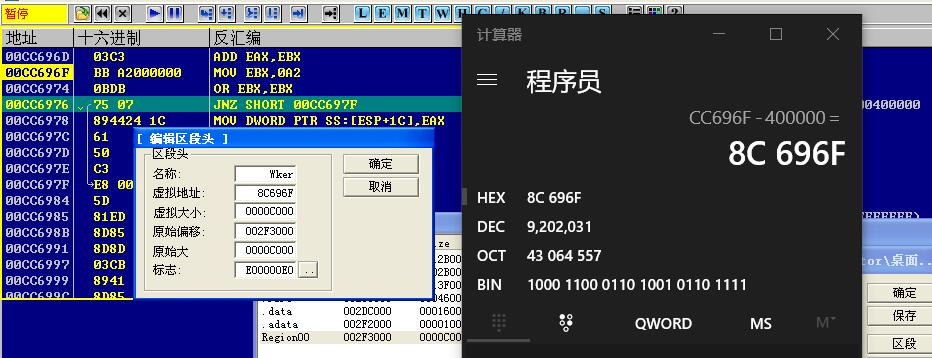
这里我们用我们当前的位置减去我们的基址（也就是400000），得到我们的虚拟地址，然后我们保存一下。
这个时候我们重建PE，但在重建之前我们需要设置：
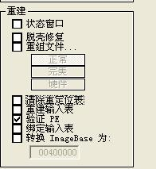
只留下验证PE就好了，我们重建确定。
AsProtect找假OEP
然后我们找我们假的OEP，这个地方我们很简单，我们在我们的code断下内存访问中断，然后我们运行，运行到这个地方：
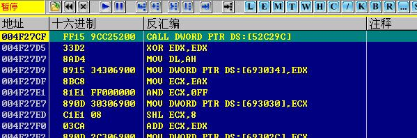
1 | 004F27CF FF15 9CC25200 CALL DWORD PTR DS:[52C29C] |
我们这个时候重建输入表，import REC我们填写我们的假OEP，然后查找：
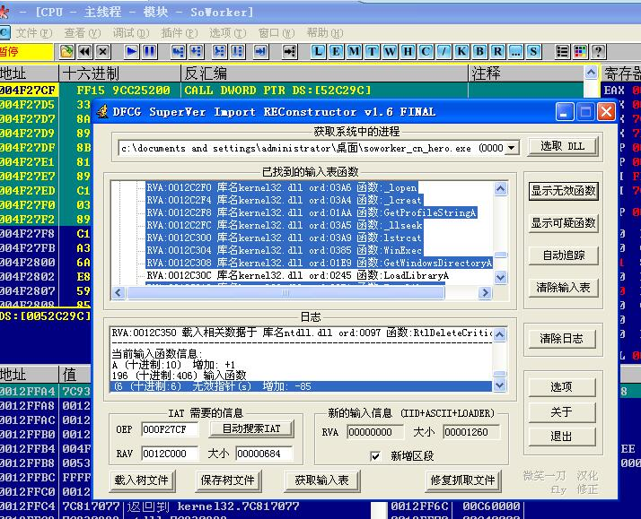
我们用等级一修复，还剩下六个，我们用ASProcet的插件进行搜索，最后得到的结果：
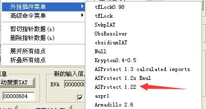
我们全部都找到了。
我们修改我们的OEP，修改为我们的假OEP地址的相对地址：0x00CC696F-0x00400000=0x008C696F
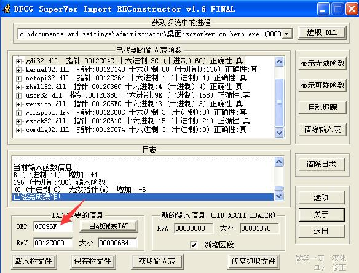
然后抓取修复就可以了。
PS：但在这个地方，我却没有成功，不知道为什么。但是操作确实是这个样子的，可能是OD的版本不同，或者我查看的这个程序是在是太老了的原因，这也算是给自己留下的一个疑惑吧，脱壳学习，先暂停一下，是时候复习一下Win32了！